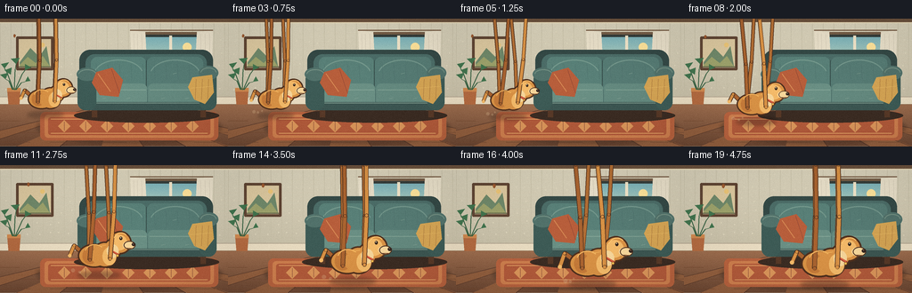
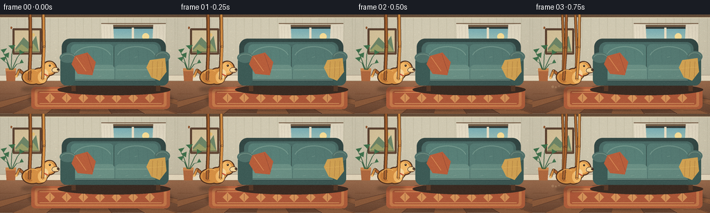
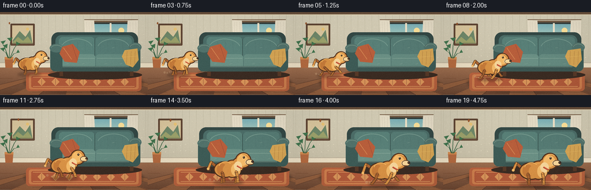
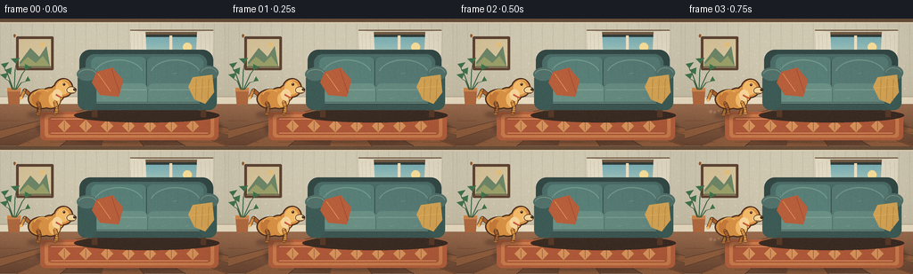

CODING AGENTS AS PIXEL WORLD MODELS
traex/DeepSeek-V4.1-Flash · dynamic_spatial_relationship_0001
点击播放 · 原生 RGB 像素
逐轮保存的候选
回放视频、检查图与代码变化。
每份候选均可单独播放。实际图片检查记录在下方工具轨迹中。
候选 01播放与检查图
点击播放 · 原生 RGB 像素


展开代码变化
--- 上一保存版本
+++ 本次保存版本
@@ -0,0 +1,503 @@
+"""Procedurally render a dog running from the left of a sofa to its front."""
+
+from __future__ import annotations
+
+import math
+from pathlib import Path
+
+import numpy as np
+from PIL import Image, ImageDraw, ImageFilter
+
+import artifact_io
+
+
+WIDTH = 256
+HEIGHT = 144
+FRAMES = 20
+FPS = 4
+SUPERSAMPLE = 4
+S = SUPERSAMPLE
+CASE_DIR = Path(__file__).resolve().parent
+
+
+def sc(value: float) -> int:
+ return int(round(value * S))
+
+
+def box(x0: float, y0: float, x1: float, y1: float) -> tuple[int, int, int, int]:
+ return sc(x0), sc(y0), sc(x1), sc(y1)
+
+
+def point(x: float, y: float) -> tuple[int, int]:
+ return sc(x), sc(y)
+
+
+def mix(a: tuple[int, int, int], b: tuple[int, int, int], t: float) -> tuple[int, int, int]:
+ return tuple(int(round(a[i] + (b[i] - a[i]) * t)) for i in range(3))
+
+
+def smoothstep(t: float) -> float:
+ t = max(0.0, min(1.0, t))
+ return t * t * (3.0 - 2.0 * t)
+
+
+def wall_texture(draw: ImageDraw.ImageDraw, rng: np.random.Generator) -> None:
+ # Quiet vertical wallpaper with tiny flecks keeps the large wall from reading flat.
+ for x in range(0, WIDTH, 12):
+ draw.line([point(x, 5), point(x, 89)], fill=(190, 184, 161), width=sc(0.45))
+ for x in range(6, WIDTH, 12):
+ for y in range(12, 87, 13):
+ jitter_x = float(rng.integers(-2, 3))
+ jitter_y = float(rng.integers(-2, 3))
+ draw.ellipse(
+ box(
+ x + jitter_x,
+ y + jitter_y,
+ x + jitter_x + 1.2,
+ y + jitter_y + 1.4,
+ ),
+ fill=(214, 207, 183),
+ )
+
+
+def draw_window(draw: ImageDraw.ImageDraw) -> None:
+ # Soft shadow and wooden reveal.
+ draw.rounded_rectangle(box(153, 15, 231, 74), radius=sc(3), fill=(111, 89, 69))
+ draw.rounded_rectangle(box(157, 18, 227, 70), radius=sc(2), fill=(49, 59, 57))
+
+ sky_top = (120, 173, 180)
+ sky_bottom = (216, 220, 185)
+ for y in range(21, 68):
+ t = (y - 21) / 47.0
+ draw.line(
+ [point(160, y), point(224, y)],
+ fill=mix(sky_top, sky_bottom, t),
+ width=sc(1),
+ )
+
+ # Distant garden shapes behind the glass.
+ draw.ellipse(box(160, 51, 181, 72), fill=(91, 126, 94))
+ draw.ellipse(box(174, 45, 199, 71), fill=(111, 144, 100))
+ draw.ellipse(box(192, 51, 218, 72), fill=(82, 117, 85))
+ draw.ellipse(box(207, 43, 229, 68), fill=(126, 154, 107))
+ draw.rectangle(box(159, 65, 226, 70), fill=(103, 126, 84))
+ draw.ellipse(box(205, 27, 215, 37), fill=(245, 220, 151))
+
+ # Mullions and a narrow sill.
+ draw.rectangle(box(190, 19, 193, 69), fill=(233, 222, 196))
+ draw.rectangle(box(158, 42, 226, 45), fill=(233, 222, 196))
+ draw.rectangle(box(154, 70, 231, 74), fill=(197, 170, 130))
+ draw.line([point(156, 71), point(229, 71)], fill=(238, 218, 177), width=sc(0.8))
+
+ # Sheer curtain bunches at the sides.
+ curtain = (225, 217, 196)
+ draw.polygon(
+ [point(146, 13), point(163, 15), point(166, 76), point(149, 79)],
+ fill=curtain,
+ )
+ draw.polygon(
+ [point(221, 15), point(239, 13), point(237, 79), point(218, 76)],
+ fill=curtain,
+ )
+ for x in (150, 154, 159, 225, 230, 235):
+ draw.line([point(x, 17), point(x + 1, 75)], fill=(205, 197, 177), width=sc(0.6))
+ draw.line([point(146, 13), point(239, 13)], fill=(116, 91, 69), width=sc(1.2))
+
+
+def draw_art_and_plant(draw: ImageDraw.ImageDraw) -> None:
+ # Framed landscape.
+ draw.rounded_rectangle(box(18, 20, 60, 58), radius=sc(1.5), fill=(91, 66, 50))
+ draw.rectangle(box(21, 23, 57, 55), fill=(212, 194, 155))
+ draw.polygon(
+ [point(22, 49), point(34, 33), point(44, 43), point(52, 31), point(56, 54), point(22, 54)],
+ fill=(107, 132, 103),
+ )
+ draw.polygon(
+ [point(22, 52), point(31, 43), point(40, 50), point(48, 42), point(56, 54), point(22, 54)],
+ fill=(151, 157, 105),
+ )
+ draw.ellipse(box(45, 27, 50, 32), fill=(227, 191, 117))
+ draw.line([point(21, 54), point(57, 54)], fill=(82, 87, 63), width=sc(1.0))
+
+ # Tall plant at the left edge.
+ draw.ellipse(box(4, 100, 28, 110), fill=(91, 66, 51))
+ draw.polygon([point(8, 79), point(23, 79), point(21, 104), point(10, 104)], fill=(173, 103, 63))
+ draw.rectangle(box(8, 78, 23, 82), fill=(200, 132, 77))
+ stems = [
+ ((15, 80), (8, 61), (5, 56)),
+ ((16, 80), (17, 57), (18, 51)),
+ ((17, 80), (25, 62), (28, 58)),
+ ((14, 80), (10, 70), (6, 68)),
+ ((18, 80), (24, 72), (28, 71)),
+ ]
+ for stem in stems:
+ draw.line([point(*stem[0]), point(*stem[1])], fill=(52, 94, 65), width=sc(1.0))
+ draw.line([point(*stem[1]), point(*stem[2])], fill=(52, 94, 65), width=sc(0.8))
+ leaves = [
+ (5, 56, 1, 51, 10, 49),
+ (18, 51, 12, 45, 22, 44),
+ (28, 58, 28, 51, 35, 55),
+ (6, 68, 0, 63, 9, 61),
+ (28, 71, 31, 65, 34, 70),
+ (12, 63, 5, 58, 13, 55),
+ ]
+ for leaf in leaves:
+ draw.polygon(
+ [point(leaf[0], leaf[1]), point(leaf[2], leaf[3]), point(leaf[4], leaf[5])],
+ fill=(62, 112, 76),
+ )
+
+
+def draw_floor_and_rug(draw: ImageDraw.ImageDraw) -> None:
+ # Floor boards fan gently toward the room's vanishing point.
+ floor_top = (150, 105, 76)
+ floor_bottom = (103, 68, 49)
+ for y in range(97, 144):
+ t = (y - 97) / 46.0
+ draw.line([point(0, y), point(WIDTH, y)], fill=mix(floor_top, floor_bottom, t), width=sc(1))
+ bottom_edges = [-78, -30, 18, 66, 114, 162, 210, 258, 306, 354]
+ for i, x_bottom in enumerate(bottom_edges):
+ draw.line(
+ [point(126, 95), point(x_bottom, 145)],
+ fill=(86, 55, 41),
+ width=sc(0.8),
+ )
+ if i + 1 < len(bottom_edges):
+ x_next = bottom_edges[i + 1]
+ if i % 2 == 0:
+ draw.polygon(
+ [point(126, 97), point(x_bottom, 144), point(x_next, 144)],
+ fill=(141, 92, 61),
+ )
+ for y, offset in ((115, 0), (128, 34), (139, 12)):
+ for x in range(-10 + offset, 270, 54):
+ draw.line([point(x, y), point(x + 32, y)], fill=(112, 72, 49), width=sc(0.55))
+
+ # Woven rug anchors both the dog's start and finish positions.
+ shadow = Image.new("RGBA", (WIDTH * S, HEIGHT * S), (0, 0, 0, 0))
+ shadow_draw = ImageDraw.Draw(shadow)
+ shadow_draw.ellipse(box(41, 104, 249, 141), fill=(38, 29, 27, 80))
+ shadow = shadow.filter(ImageFilter.GaussianBlur(sc(2.0)))
+ return shadow
+
+
+def draw_rug(draw: ImageDraw.ImageDraw) -> None:
+ draw.rounded_rectangle(box(45, 105, 245, 137), radius=sc(6), fill=(177, 95, 61))
+ draw.rounded_rectangle(box(50, 108, 240, 134), radius=sc(4), fill=(199, 123, 76))
+ draw.rounded_rectangle(box(54, 111, 236, 131), radius=sc(3), fill=(171, 87, 57))
+ draw.line([point(57, 113), point(233, 113)], fill=(226, 165, 104), width=sc(0.7))
+ draw.line([point(57, 129), point(233, 129)], fill=(226, 165, 104), width=sc(0.7))
+ for x in range(65, 232, 24):
+ draw.polygon(
+ [point(x, 121), point(x + 7, 114), point(x + 14, 121), point(x + 7, 128)],
+ fill=(211, 145, 88),
+ )
+ draw.line([point(x + 7, 116), point(x + 7, 126)], fill=(132, 72, 53), width=sc(0.55))
+
+
+def draw_sofa(draw: ImageDraw.ImageDraw, shadow: Image.Image) -> None:
+ # A broad three-quarter sofa with enough silhouette detail to remain legible at 256 px.
+ draw.ellipse(box(83, 101, 246, 117), fill=(56, 42, 34, 85))
+ draw.rectangle(box(103, 96, 109, 111), fill=(84, 55, 39))
+ draw.rectangle(box(225, 96, 231, 111), fill=(84, 55, 39))
+ draw.rounded_rectangle(box(89, 35, 239, 101), radius=sc(12), fill=(49, 70, 68))
+ draw.rounded_rectangle(box(96, 40, 232, 96), radius=sc(10), fill=(72, 105, 101))
+
+ # Back cushions.
+ draw.rounded_rectangle(box(102, 43, 164, 84), radius=sc(7), fill=(85, 124, 117))
+ draw.rounded_rectangle(box(165, 43, 228, 84), radius=sc(7), fill=(82, 119, 113))
+ draw.arc(box(105, 46, 161, 81), 196, 344, fill=(112, 148, 137), width=sc(1.2))
+ draw.arc(box(168, 46, 225, 81), 196, 344, fill=(110, 145, 135), width=sc(1.2))
+ draw.line([point(164, 47), point(164, 82)], fill=(54, 80, 77), width=sc(1.0))
+
+ # Seat cushions and front rail.
+ draw.rounded_rectangle(box(100, 73, 165, 99), radius=sc(6), fill=(102, 139, 129))
+ draw.rounded_rectangle(box(166, 73, 230, 99), radius=sc(6), fill=(96, 133, 124))
+ draw.line([point(102, 80), point(164, 80)], fill=(125, 158, 145), width=sc(1.0))
+ draw.line([point(168, 80), point(228, 80)], fill=(120, 153, 141), width=sc(1.0))
+ draw.rounded_rectangle(box(99, 94, 232, 103), radius=sc(3), fill=(57, 83, 80))
+ draw.line([point(102, 95), point(229, 95)], fill=(126, 155, 142), width=sc(0.7))
+
+ # Arms with rolled tops.
+ draw.rounded_rectangle(box(87, 59, 108, 103), radius=sc(9), fill=(58, 88, 84))
+ draw.rounded_rectangle(box(224, 57, 243, 103), radius=sc(9), fill=(58, 88, 84))
+ draw.ellipse(box(86, 55, 109, 70), fill=(78, 110, 104))
+ draw.ellipse(box(223, 53, 245, 69), fill=(78, 110, 104))
+ draw.arc(box(88, 57, 108, 68), 185, 355, fill=(112, 141, 129), width=sc(1.0))
+ draw.arc(box(225, 55, 243, 67), 185, 355, fill=(111, 139, 127), width=sc(1.0))
+
+ # Cushion seams and small woven dashes.
+ for x in range(108, 224, 13):
+ draw.line([point(x, 51), point(x + 1, 68)], fill=(70, 104, 100), width=sc(0.35))
+ for x, y in ((115, 90), (142, 90), (181, 90), (208, 90), (119, 59), (194, 62)):
+ draw.line([point(x, y), point(x + 4, y - 1)], fill=(136, 165, 151), width=sc(0.55))
+
+ # Terracotta throw pillow.
+ draw.polygon(
+ [point(108, 60), point(126, 55), point(138, 69), point(133, 88), point(112, 86), point(103, 72)],
+ fill=(177, 91, 58),
+ )
+ draw.line([point(110, 62), point(124, 82)], fill=(210, 137, 84), width=sc(0.8))
+ draw.line([point(125, 57), point(134, 84)], fill=(133, 66, 51), width=sc(0.55))
+
+ # Folded ochre throw over the right arm.
+ draw.polygon(
+ [point(216, 66), point(238, 63), point(240, 83), point(230, 96), point(218, 91), point(211, 77)],
+ fill=(205, 159, 82),
+ )
+ for x in (220, 227, 234):
+ draw.line([point(x, 68), point(x - 1, 91)], fill=(166, 118, 62), width=sc(0.6))
+ draw.line([point(214, 78), point(238, 76)], fill=(231, 188, 104), width=sc(0.6))
+
+
+def draw_segment(
+ draw: ImageDraw.ImageDraw,
+ a: tuple[float, float],
+ b: tuple[float, float],
+ width: float,
+ fill: tuple[int, int, int],
+ outline: tuple[int, int, int] = (79, 49, 31),
+) -> None:
+ draw.line([point(*a), point(*b)], fill=outline, width=sc(width + 1.4), joint="curve")
+ draw.line([point(*a), point(*b)], fill=fill, width=sc(width), joint="curve")
+ radius = width / 2
+ for x, y in (a, b):
+ draw.ellipse(box(x - radius, y - radius, x + radius, y + radius), fill=outline)
+ draw.ellipse(
+ box(x - radius + 0.35, y - radius + 0.35, x + radius - 0.35, y + radius - 0.35),
+ fill=fill,
+ )
+
+
+def draw_leg(
+ draw: ImageDraw.ImageDraw,
+ hip: tuple[float, float],
+ phase: float,
+ stride: float,
+ color: tuple[int, int, int],
+ width: float,
+) -> None:
+ swing = math.sin(phase)
+ lift = max(0.0, math.sin(phase)) * 4.5
+ foot = (hip[0] + stride * swing + 1.2, -0.4 - lift)
+ knee = ((hip[0] + foot[0]) * 0.5 + 1.4, (hip[1] + foot[1]) * 0.5 + 0.8)
+ draw_segment(draw, hip, knee, width, color)
+ draw_segment(draw, knee, foot, width * 0.9, color)
+ draw.ellipse(box(foot[0] - 2.3, foot[1] - 1.1, foot[0] + 2.5, foot[1] + 1.2), fill=(111, 69, 38))
+ draw.ellipse(box(foot[0] - 1.8, foot[1] - 0.9, foot[0] + 2.0, foot[1] + 0.5), fill=color)
+
+
+def draw_dog(
+ base: Image.Image,
+ center_x: float,
+ ground_y: float,
+ scale: float,
+ gait: float,
+ running: float,
+) -> None:
+ layer = Image.new("RGBA", base.size, (0, 0, 0, 0))
+ draw = ImageDraw.Draw(layer)
+ bob = -abs(math.sin(gait * 2.0)) * 1.1 * running
+
+ def p(x: float, y: float) -> tuple[float, float]:
+ return center_x + x * scale, ground_y + (y + bob) * scale
+
+ def b(x0: float, y0: float, x1: float, y1: float) -> tuple[int, int, int, int]:
+ xa, ya = p(x0, y0)
+ xb, yb = p(x1, y1)
+ return sc(xa), sc(ya), sc(xb), sc(yb)
+
+ outline = (76, 46, 29)
+ fur_dark = (163, 96, 47)
+ fur = (210, 142, 68)
+ fur_light = (236, 181, 103)
+ cream = (239, 208, 151)
+
+ # Moving ground shadow.
+ shadow = Image.new("RGBA", base.size, (0, 0, 0, 0))
+ shadow_draw = ImageDraw.Draw(shadow)
+ sx0 = sc(center_x - 22 * scale)
+ sx1 = sc(center_x + 19 * scale)
+ sy0 = sc(ground_y - 3 * scale)
+ sy1 = sc(ground_y + 4 * scale)
+ shadow_draw.ellipse((sx0, sy0, sx1, sy1), fill=(51, 35, 28, 88))
+ shadow = shadow.filter(ImageFilter.GaussianBlur(sc(2.0)))
+ base.alpha_composite(shadow)
+
+ # Tail, animated with a light counter-swing.
+ wag = math.sin(gait * 1.35) * 5.0 * running
+ tail_a = p(-17, -20)
+ tail_b = p(-25, -27 + wag * 0.35)
+ tail_c = p(-29, -18 + wag)
+ draw_segment(draw, tail_a, tail_b, 3.4 * scale, fur_dark, outline)
+ draw_segment(draw, tail_b, tail_c, 2.8 * scale, fur, outline)
+ tip_x, tip_y = p(-29, -18 + wag)
+ draw.ellipse(
+ box(tip_x - 1.7 * scale, tip_y - 1.7 * scale, tip_x + 1.7 * scale, tip_y + 1.7 * scale),
+ fill=fur_light,
+ )
+
+ # Far-side legs are darker and behind the torso.
+ far_phase = gait + math.pi
+ draw_leg(draw, p(-11, -13), far_phase, 7.5 * running, (172, 107, 52), 2.8 * scale)
+ draw_leg(draw, p(8, -14), far_phase, 8.0 * running, (174, 108, 52), 2.8 * scale)
+
+ # Build the torso silhouette from overlapping ovals so it has one clean outer edge.
+ silhouette = [
+ (-20, -27, 8, -7),
+ (-7, -29, 15, -7),
+ (4, -32, 19, -15),
+ (9, -39, 28, -20),
+ ]
+ for oval in silhouette:
+ x0, y0, x1, y1 = b(*oval)
+ draw.ellipse((x0 - sc(1.4 * scale), y0 - sc(1.4 * scale), x1 + sc(1.4 * scale), y1 + sc(1.4 * scale)), fill=outline)
+ for oval in silhouette:
+ draw.ellipse(b(*oval), fill=fur)
+
+ # Subtle shoulder, chest and rump shading.
+ draw.ellipse(b(-17, -25, -3, -9), fill=(191, 119, 56))
+ draw.ellipse(b(-9, -25, 9, -9), fill=fur)
+ draw.ellipse(b(2, -25, 15, -8), fill=fur_light)
+ draw.ellipse(b(10, -37, 25, -22), fill=fur_light)
+
+ # Neck ruff, muzzle, nose, eye and floppy ear.
+ draw.ellipse(b(6, -28, 17, -15), fill=cream)
+ draw.ellipse(b(21, -31, 33, -23), fill=cream)
+ draw.ellipse(b(22, -31, 33, -23), outline=outline, width=sc(0.8 * scale))
+ draw.ellipse(b(29.5, -29.3, 33, -26.2), fill=(49, 36, 30))
+ draw.ellipse(b(30.4, -28.8, 31.4, -27.8), fill=(119, 93, 75))
+ draw.line([point(*p(25, -24.3)), point(*p(30.5, -24.0))], fill=(112, 66, 39), width=sc(0.7 * scale))
+ draw.ellipse(b(18.0, -35.0, 20.6, -31.9), fill=(49, 35, 27))
+ draw.ellipse(b(18.7, -34.5, 19.5, -33.7), fill=(250, 232, 190))
+ draw.polygon(
+ [p(12, -38), p(8, -33), p(8.5, -25), p(13, -22), p(17, -27), p(18, -34)],
+ fill=(135, 76, 42),
+ )
+ draw.polygon(
+ [p(11, -35), p(9.8, -30), p(11, -25), p(13.5, -25.5), p(14.2, -31)],
+ fill=(164, 96, 50),
+ )
+
+ # Collar and tag.
+ draw.line([point(*p(10, -22)), point(*p(17, -18))], fill=(164, 65, 48), width=sc(2.1 * scale))
+ draw.line([point(*p(10.5, -22.4)), point(*p(16.5, -18.5))], fill=(220, 96, 62), width=sc(0.9 * scale))
+ tag_x, tag_y = p(16, -17.2)
+ draw.ellipse(
+ box(tag_x - 1.2 * scale, tag_y - 1.2 * scale, tag_x + 1.2 * scale, tag_y + 1.2 * scale),
+ fill=(242, 190, 82),
+ outline=(123, 76, 37),
+ width=sc(0.5),
+ )
+
+ # Near-side legs complete the run cycle.
+ draw_leg(draw, p(-10, -13), gait, 8.5 * running, fur_dark, 3.1 * scale)
+ draw_leg(draw, p(9, -14), gait, 9.0 * running, fur, 3.2 * scale)
+
+ # A few warm highlight strokes suggest fur without adding noisy detail.
+ draw.arc(b(-15, -28, 4, -12), 195, 318, fill=(235, 177, 95), width=sc(0.9 * scale))
+ draw.arc(b(12, -39, 27, -23), 202, 315, fill=(246, 195, 113), width=sc(0.8 * scale))
+ draw.line([point(*p(-1, -26)), point(*p(5, -27))], fill=(233, 172, 88), width=sc(0.7 * scale))
+
+ # Small dust puffs at the fastest part of the run.
+ if running > 0.55:
+ for i, (dx, dy, radius) in enumerate(((-24, -2, 1.8), (-19, -1, 1.2), (-15, -3, 0.8))):
+ pulse = 0.5 + 0.5 * math.sin(gait * 2.2 + i)
+ cx, cy = p(dx - pulse * 2.5, dy - pulse * 1.4)
+ draw.ellipse(
+ box(cx - radius * scale, cy - radius * scale, cx + radius * scale, cy + radius * scale),
+ fill=(211, 180, 139, int(75 * running)),
+ )
+
+ base.alpha_composite(layer)
+
+
+def make_background() -> Image.Image:
+ rng = np.random.default_rng(11)
+ image = Image.new("RGB", (WIDTH * S, HEIGHT * S), (202, 195, 173))
+ draw = ImageDraw.Draw(image)
+
+ # Wall gradient.
+ for y in range(0, 91):
+ t = y / 91.0
+ color = mix((211, 205, 183), (192, 185, 163), t)
+ draw.line([point(0, y), point(WIDTH, y)], fill=color, width=sc(1))
+ wall_texture(draw, rng)
+
+ # Crown and baseboard.
+ draw.rectangle(box(0, 0, 256, 4), fill=(102, 78, 59))
+ draw.line([point(0, 4.5), point(256, 4.5)], fill=(227, 214, 183), width=sc(1.2))
+ draw.rectangle(box(0, 88, 256, 97), fill=(226, 214, 189))
+ draw.line([point(0, 88), point(256, 88)], fill=(169, 157, 137), width=sc(0.8))
+ draw.line([point(0, 96.5), point(256, 96.5)], fill=(132, 103, 76), width=sc(1.0))
+
+ draw_window(draw)
+ draw_art_and_plant(draw)
+ rug_shadow = draw_floor_and_rug(draw)
+ image = image.convert("RGBA")
+ image.alpha_composite(rug_shadow)
+ draw = ImageDraw.Draw(image)
+ draw_rug(draw)
+ draw_sofa(draw, rug_shadow)
+
+ return image
+
+
+def add_camera_finish(frame: Image.Image, frame_index: int) -> Image.Image:
+ small = frame.convert("RGB").resize((WIDTH, HEIGHT), Image.Resampling.LANCZOS)
+ arr = np.asarray(small).astype(np.float32)
+ yy, xx = np.mgrid[0:HEIGHT, 0:WIDTH]
+ nx = (xx - WIDTH / 2) / (WIDTH / 2)
+ ny = (yy - HEIGHT / 2) / (HEIGHT / 2)
+ vignette = 1.025 - 0.085 * np.clip(nx * nx * 0.55 + ny * ny * 0.7, 0, 1)
+ arr *= vignette[:, :, None]
+
+ # Very restrained grain and a warm highlight lift.
+ rng = np.random.default_rng(100 + frame_index)
+ grain = rng.normal(0.0, 1.45, (HEIGHT, WIDTH, 1))
+ arr += grain
+ arr[:, :, 0] += 2.0
+ arr[:, :, 1] += 1.0
+ return Image.fromarray(np.clip(arr, 0, 255).astype(np.uint8), "RGB")
+
+
+def dog_motion(frame_index: int) -> tuple[float, float, float, float, float]:
+ if frame_index <= 2:
+ # Brief attentive pause establishes the dog clearly to the left of the sofa.
+ x = 52.5 + frame_index * 0.55
+ ground = 107.5
+ scale = 1.0
+ gait = 0.45 + frame_index * 0.12
+ running = 0.0
+ else:
+ u = min(1.0, (frame_index - 3) / 15.0)
+ ease = smoothstep(u)
+ x = 55.0 + 105.0 * ease
+ ground = 108.5 + 25.5 * smoothstep(min(1.0, u * 1.04))
+ scale = 1.0 + 0.34 * ease
+ if frame_index <= 17:
+ gait = 0.3 + (frame_index - 3) * 0.82
+ running = 1.0
+ else:
+ settle = smoothstep((frame_index - 17) / 2.0)
+ gait = 0.3 + 14 * 0.82
+ running = 1.0 - settle
+ ground -= 0.4 * settle
+ return x, ground, scale, gait, running
+
+
+def main() -> None:
+ background = make_background()
+ frames: list[np.ndarray] = []
+ for frame_index in range(FRAMES):
+ frame = background.copy()
+ x, ground, scale, gait, running = dog_motion(frame_index)
+ draw_dog(frame, x, ground, scale, gait, running)
+ finished = add_camera_finish(frame, frame_index)
+ frames.append(np.asarray(finished, dtype=np.uint8))
+
+ artifact_io.save(frames, CASE_DIR)
+
+
+if __name__ == "__main__":
+ main()
候选 02播放与检查图
点击播放 · 原生 RGB 像素


展开代码变化
--- 上一保存版本
+++ 本次保存版本
@@ -272,19 +272,27 @@
def draw_leg(
draw: ImageDraw.ImageDraw,
hip: tuple[float, float],
+ ground_y: float,
+ scale: float,
phase: float,
stride: float,
color: tuple[int, int, int],
width: float,
) -> None:
swing = math.sin(phase)
- lift = max(0.0, math.sin(phase)) * 4.5
- foot = (hip[0] + stride * swing + 1.2, -0.4 - lift)
+ lift = max(0.0, math.sin(phase)) * 4.5 * scale
+ foot = (hip[0] + (stride * swing + 1.2) * scale, ground_y - lift)
knee = ((hip[0] + foot[0]) * 0.5 + 1.4, (hip[1] + foot[1]) * 0.5 + 0.8)
draw_segment(draw, hip, knee, width, color)
draw_segment(draw, knee, foot, width * 0.9, color)
- draw.ellipse(box(foot[0] - 2.3, foot[1] - 1.1, foot[0] + 2.5, foot[1] + 1.2), fill=(111, 69, 38))
- draw.ellipse(box(foot[0] - 1.8, foot[1] - 0.9, foot[0] + 2.0, foot[1] + 0.5), fill=color)
+ draw.ellipse(
+ box(foot[0] - 2.3 * scale, foot[1] - 1.1 * scale, foot[0] + 2.5 * scale, foot[1] + 1.2 * scale),
+ fill=(111, 69, 38),
+ )
+ draw.ellipse(
+ box(foot[0] - 1.8 * scale, foot[1] - 0.9 * scale, foot[0] + 2.0 * scale, foot[1] + 0.5 * scale),
+ fill=color,
+ )
def draw_dog(
@@ -339,8 +347,8 @@
# Far-side legs are darker and behind the torso.
far_phase = gait + math.pi
- draw_leg(draw, p(-11, -13), far_phase, 7.5 * running, (172, 107, 52), 2.8 * scale)
- draw_leg(draw, p(8, -14), far_phase, 8.0 * running, (174, 108, 52), 2.8 * scale)
+ draw_leg(draw, p(-11, -13), ground_y, scale, far_phase, 7.5 * running, (172, 107, 52), 2.8 * scale)
+ draw_leg(draw, p(8, -14), ground_y, scale, far_phase, 8.0 * running, (174, 108, 52), 2.8 * scale)
# Build the torso silhouette from overlapping ovals so it has one clean outer edge.
silhouette = [
@@ -391,8 +399,8 @@
)
# Near-side legs complete the run cycle.
- draw_leg(draw, p(-10, -13), gait, 8.5 * running, fur_dark, 3.1 * scale)
- draw_leg(draw, p(9, -14), gait, 9.0 * running, fur, 3.2 * scale)
+ draw_leg(draw, p(-10, -13), ground_y, scale, gait, 8.5 * running, fur_dark, 3.1 * scale)
+ draw_leg(draw, p(9, -14), ground_y, scale, gait, 9.0 * running, fur, 3.2 * scale)
# A few warm highlight strokes suggest fur without adding noisy detail.
draw.arc(b(-15, -28, 4, -12), 195, 318, fill=(235, 177, 95), width=sc(0.9 * scale))
@@ -458,7 +466,7 @@
arr += grain
arr[:, :, 0] += 2.0
arr[:, :, 1] += 1.0
- return Image.fromarray(np.clip(arr, 0, 255).astype(np.uint8), "RGB")
+ return Image.fromarray(np.clip(arr, 0, 255).astype(np.uint8))
def dog_motion(frame_index: int) -> tuple[float, float, float, float, float]:
可观测工具轨迹
实际执行的命令与返回图片。
命令 1exit 0
/bin/bash -c "pwd && rg --files -g 'prompt.txt' -g 'GENERATION_RULES.md' -g 'task_spec.json' -g '"'!*.mp4'"' -g '"'!*.mov'"' -g '"'!*.webm'"'"
命令 2exit 0
/bin/bash -c "git status --short && find . -maxdepth 2 -type f | sort | sed -n '1,200p'"
命令 3exit 0
/bin/bash -c 'cat GENERATION_RULES.md'
命令 4exit 0
/bin/bash -c 'cat prompt.txt'
命令 5exit 0
/bin/bash -c 'cat task_spec.json'
命令 6exit 0
/bin/bash -c "sed -n '1,240p' artifact_io.py && printf '\\n--- player ---\\n' && sed -n '1,200p' player_template.html"
命令 7exit 0
/bin/bash -c "python - <<'PY'
import PIL, numpy
print('Pillow', PIL.__version__)
print('NumPy', numpy.__version__)
PY"命令 8exit 0
/bin/bash -c "find . -maxdepth 2 -type f -not -path './.git/*' -printf '%p %s bytes\\n' | sort"
命令 9exit 1
/bin/bash -c 'python generate.py'
命令 10exit 0
/bin/bash -c 'python generate.py && ls -lh pixels.npz inspection.png transition_check.png index.html frames/00.png frames/19.png'
命令 11exit 0
/bin/bash -c 'python generate.py'
命令 12exit 0
/bin/bash -c 'command -v chafa || true; command -v viu || true; command -v jp2 || true; command -v img2txt || true; command -v ffmpeg || true'
命令 13exit 0
/bin/bash -c "python - <<'PY' from PIL import Image import numpy as np for name in ['frames/00.png','frames/03.png','frames/08.png','frames/13.png','frames/19.png']: a=np.asarray(Image.open(name)).astype(float) print(name, a.shape, 'mean', a.mean((0,1)).round(1), 'std', a.std((0,1)).round(1), 'range', a.min(), a.max()) PY"
命令 14exit 0
/bin/bash -c "python - <<'PY'
from PIL import Image
import numpy as np
chars=' .:-=+*#%@'
for name in ['frames/00.png','frames/08.png','frames/19.png']:
a=np.asarray(Image.open(name).convert('L').resize((64,36),Image.Resampling.BOX))
print('\\n'+name)
for row in a:
print(''.join(chars[min(len(chars)-1,int(v)*(len(chars)-1)//256)] for v in row))
PY"命令 15exit 0
/bin/bash -c "python - <<'PY'
from PIL import Image
import numpy as np
for i in [0,1,2,3,5,8,11,14,17,18,19]:
a=np.asarray(Image.open(f'frames/{i:02d}.png')).astype(np.int16)
print(i, 'mean', tuple(a.mean((0,1)).round(1)), 'motion', '0' if i==0 else int(np.abs(a-np.asarray(Image.open(f'frames/{i-1:02d}.png')).astype(np.int16)).mean().round(2)))
PY"命令 16exit 0
/bin/bash -c "python - <<'PY'
from PIL import Image
import numpy as np
# Background-only delta around the dog's intended bounds, using color distance from a rendered no-dog background recreation.
import generate
bg=np.asarray(generate.add_camera_finish(generate.make_background(),0)).astype(int)
for i in range(20):
im=np.asarray(Image.open(f'frames/{i:02d}.png')).astype(int)
d=np.abs(im-bg).max(2)
ys,xs=np.where(d>24)
print(i, (xs.min(),ys.min(),xs.max(),ys.max()) if len(xs) else None, 'area',len(xs))
PY"命令 17exit 0
/bin/bash -c "python - <<'PY'
from PIL import Image
import numpy as np
for idx in (0,8,19):
a=np.asarray(Image.open(f'frames/{idx:02d}.png')).astype(int)
r,g,b=a[:,:,0],a[:,:,1],a[:,:,2]
mask=(r>130)&(r>g+30)&(g>b+20)&(r<250)
if idx==0: crop=mask[65:115,15:90]
elif idx==8: crop=mask[75:130,60:125]
else: crop=mask[75:140,105:220]
# Downsample by max-pool to make shape visible.
h,w=crop.shape
sh,sw=4,4
crop=crop[:h//sh*sh,:w//sw*sw].reshape(h//sh,sh,w//sw,sw).any((1,3))
print(f'\\nframe {idx} orange mask crop {crop.shape}')
for row in crop:
print(''.join('##' if v else ' ' for v in row))
PY"命令 18exit 0
/bin/bash -c "python - <<'PY'
from pathlib import Path
import json, wave
import numpy as np
from PIL import Image
spec=json.loads(Path('task_spec.json').read_text())
frames=sorted(Path('frames').glob('*.png'))
a=np.load('pixels.npz')['pixels']
print('spec',spec)
print('frames',len(frames),'tensor',a.shape,a.dtype,'range',a.min(),a.max())
print('images',Image.open(frames[0]).size, Image.open(frames[-1]).size)
print('index',Path('index.html').stat().st_size,'caption', 'A dog is on the left of a sofa' in Path('index.html').read_text())
print('generate has save', 'artifact_io.save(frames, CASE_DIR)' in Path('generate.py').read_text())
PY"保存候选 2 份；完成命令 18 次；可验证图片返回 0 张。原始 API 响应与完整日志保留在本地。